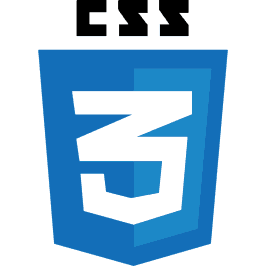
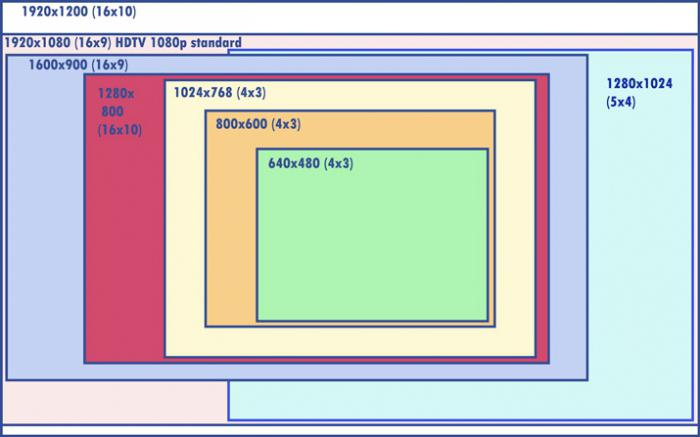

Добро пожаловать!
Данный проект был разработан Прокошевым Д.Э и Кровель Д.И в качестве зачетной работы по дисциплине «Операционные системы».
За дизайн сайта отвечал Прокошев Д.Э.
При разработке макета сайта использовалась программа
«Photoshop» версии CS6. В результате разработки дизайна возникала
масса проблем связанных с оптимизацией gif-анимации.
В изначальном варианте макета сайта из-за большого объема gif-изображения
сайт выдавал ошибки, тормозил и некорректно работал. В результате чего было
принято решение полностью корректировать gif-изображение.
В результат чего данные ошибки были исправлены.
За программную часть сайта отвечал Кровель Д.И.
Для написания кода использовалась технология Markup.
Под этой технологией подразумевается написания кода на языках HTML и CSS.
HTML — стандартизированный язык разметки документов во Всемирной паутине. Большинство веб-страниц содержат описание разметки на языке HTML (или XHTML). Язык HTML интерпретируется браузерами; полученный в результате интерпретации форматированный текст отображается на экране монитора компьютера или мобильного устройства. Язык HTML до 5-й версии определялся как приложение SGML (стандартного обобщённого языка разметки по стандарту ISO 8879). Спецификации HTML5 формулируются в терминах DOM (объектной модели документа).
 CSS — формальный язык описания внешнего вида документа, написанного с использованием языка разметки. Преимущественно используется как средство описания, оформления внешнего вида веб-страниц, написанных с помощью языков разметки HTML и XHTML
Для построения сетки было принято решение использовать технологию Flexbox. Flexbox - это модель веб-макета CSS3. Гибкая компоновка позволяет автоматически настраивать адаптивные элементы внутри контейнера в зависимости от размера экрана. При использовании декоративных элементов возникала ошибка их правильного расположения, т.к была проблема с адаптацией сайта отличным разрешения {4:3}.  Данная ошибка была решена с помощью средств @media(Директива медиа-запроса). Правило @media позволяет указать тип носителя, для которого будет применяться указанный стиль. В качестве типов выступают различные устройства, например, принтер, КПК, монитор и др.
Новости
- Добавление декоротивных элементов (Зверюшек)
- Центровка основных элементов
- Добавление фона и основных блоков
- Добавлена основная структура страницы